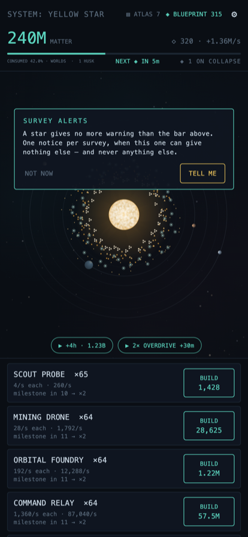
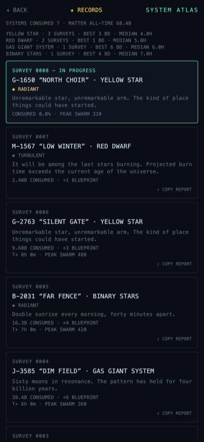
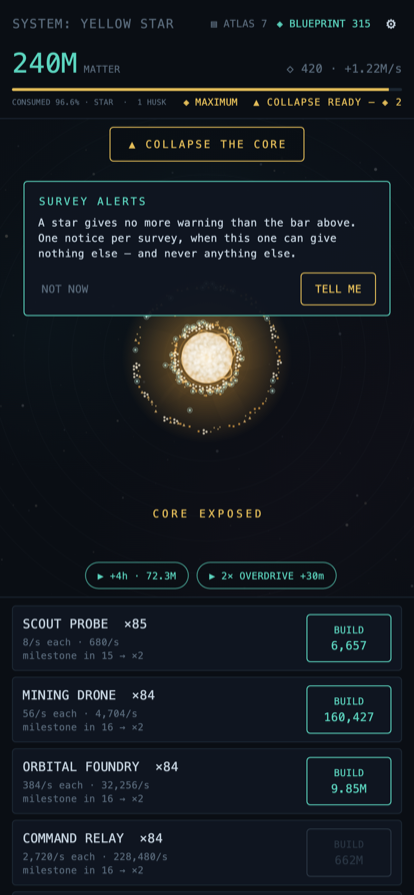

Last Light
// an idle game — for iPhone and iPad
You are a self-replicating probe swarm, launched at a dead solar system. Harvest matter, replicate, consume the system, then launch a seed probe to the next star — arriving smarter each time. Nobody remembers who launched you, or why. Not even you.



The terrarium empties
- Progression runs backwards. Most idle games fill a screen up. Here a living solar system is slowly, beautifully taken apart — and the prettier it gets, the less of it is left.
- The story reframes what you're looking at. Fragments surface as you go, and the same imagery means something different by the end.
- Drawn entirely in code. Orbits, dust, light — no sprites, no character art, nothing imported.
Diegetic all the way down
- Prestige is launching. You don't reset — you send a seed probe onward with an evolved blueprint, and choose which star to aim at.
- Automation is the swarm becoming independent, which is also foreshadowing. The mechanics and the fiction are never separate things.
- Keep an Atlas of everything you've consumed, and chase records for the strategies you'd never otherwise try.
Kind about it
- Earns while you're away, up to twelve hours banked.
- Rewarded ads are optional, and a one-time purchase removes the banner for good.
- Your swarm follows you. Progress backs up to your own iCloud with no account and no sign-up.
On the App Store
iPhone & iPad · free with optional purchases